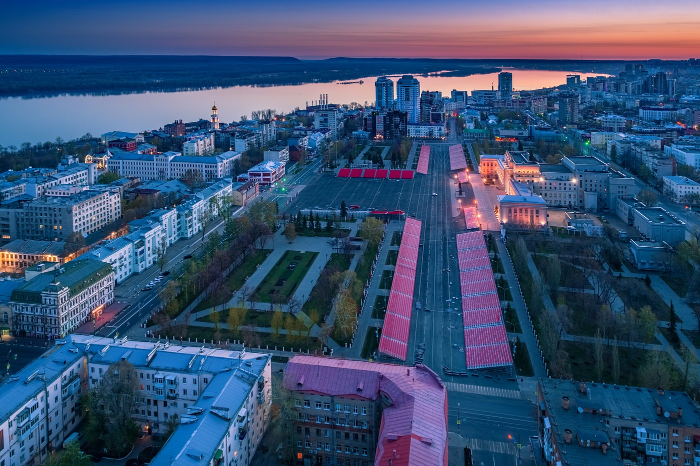
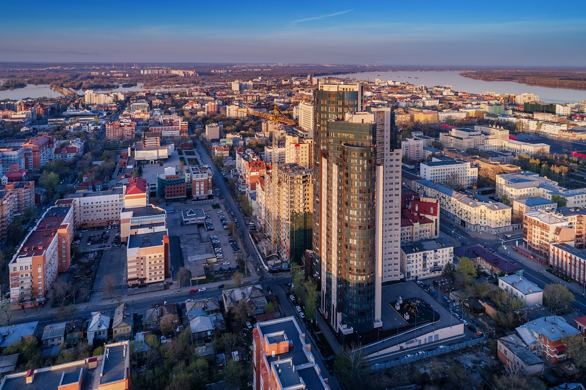
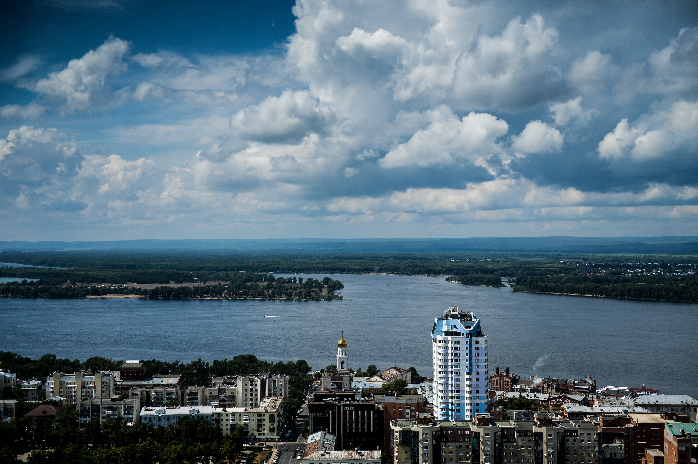
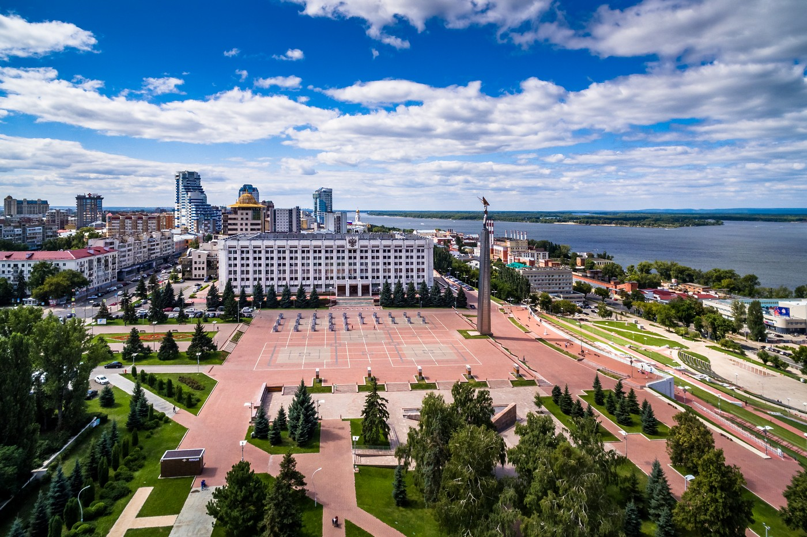

После 1998 года в Самаре впервые за многие годы отмечается рост объёмов промышленного производства. Вплоть до осени 2008 года наблюдается устойчивый экономический рост, увеличивается численность занятых в экономике. Городу, наконец, удаётся успешно сориентировать промышленность на гражданское производство. В экономической политике весомое место занимает социальная составляющая. Постепенно намечается повышение коэффициента рождаемости, что свидетельствует о повышении качества жизни населения. Тем не менее, затягивание процесса конверсии военно-промышленного комплекса в предыдущий период не позволяет Самаре сохранить лидерские позиции в Поволжье, и после создания в стране системы федеральных округов (2000 год) городу не удаётся получить статус столицы Приволжского Федерального округа. Начавшийся осенью 2008 года мировой финансово-экономический кризис существенно осложнил социально-экономическое положение города и способствовал созданию напряжённой обстановки на рынке труда и ухудшению демографической ситуации. Посткризисное развитие Самары в 2010 -2011 годы характеризуется положительной динамикой роста основных социально-экономических показателей: индекса промышленного производства, объема отгруженных товаров собственного производства по всем видам экономической деятельности, объема оборота розничной торговли и общественного питания, объема выполненных работ и услуг предприятиями транспорта и связи, ввода в эксплуатацию жилья. Повысилась инвестиционная активность предприятий, улучшились показатели их финансовой деятельности. Сохранялась тенденция роста среднемесячной заработной платы, снижения задолженности по выплате заработной платы и сокращения количества безработных граждан.
 
 